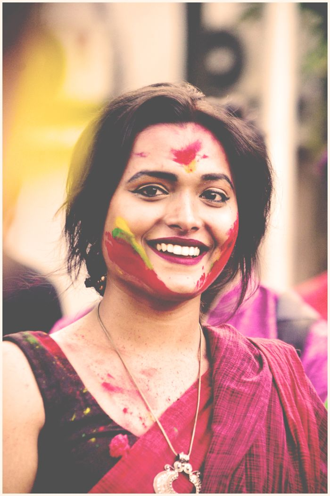
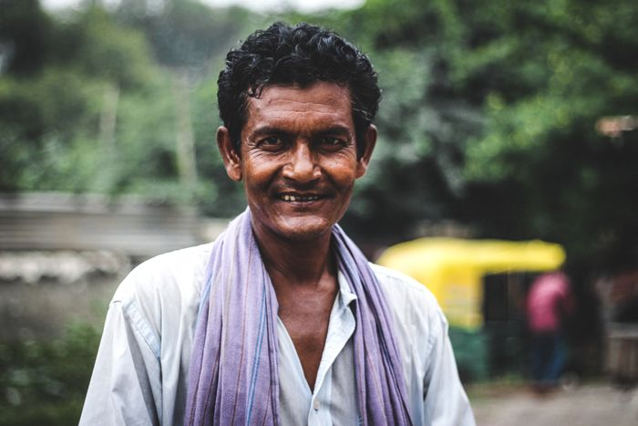

Dr. R. Venkatesh
Polity & Governance
Teaches constitutional and administrative studies.
Subject experts and mentors who teach with clarity, rigour and care.
Polity & Governance
Teaches constitutional and administrative studies.
History & Culture
Specialist in modern Indian history and culture.
Economy & Geography
Makes economic and geographic concepts approachable.
Ethics & Essay
Mentors aspirants on ethics and essay writing.
Science & Technology
Simplifies science and technology for the exam.
Environment & Current Affairs
Leads weekly current-affairs briefings.
International Relations
Covers foreign policy and global affairs.
Interview Mentor
Guides aspirants through mock Personality Tests.
Public Administration
Guides optional-paper aspirants through administrative theory and practice.
Sociology & Social Justice
Connects social issues and welfare policy to exam-ready answers.
CSAT & Aptitude
Builds speed and accuracy in reasoning, numeracy and comprehension.
Internal Security & Disaster Management
Breaks down security and disaster-management topics with clear frameworks.
Topics are explained from fundamentals to exam relevance.
Faculty are available to resolve questions after each session.
Written answers receive structured, constructive feedback.
History, culture, geography and society.
Polity, governance and international relations.
Economy, science, environment and security.
Ethics, integrity and aptitude.
“Concepts were explained so clearly that revision became much easier.”

Priya SharmaFoundation Program“The answer-writing feedback showed me exactly what to fix.”

Karthik ReddyMains Answer Writing“Mock interviews made me far more confident before the panel.”
Reach out to find the right program and batch.